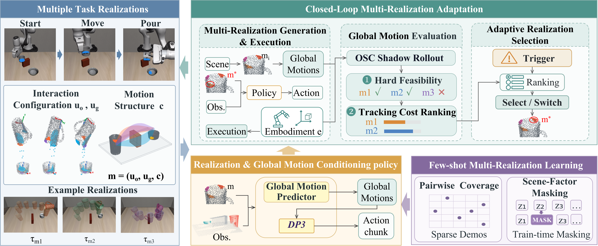

Panda rolloutassets/panda.gif
Franka Panda
Embodiment-specific realization selection
Multiple Task Realizations for Embodiment-Adaptive Robot Manipulation
The University of Tokyo
FLoRA represents multiple task-equivalent realizations and evaluates their executability under different robot embodiments. A realization can be selected or reselected when execution conditions change, while local closed-loop control handles motion execution.

assets/framework.png to display it here.Fig. 1 · FLoRA framework overview
Examples across different embodiments and task configurations. Replace the image placeholders with actual simulation screenshots, animated GIFs, or rollout stills.
Embodiment-specific realization selection

Reselection under changing conditions

Cross-embodiment evaluation
Images are not yet uploaded. The placeholders do not represent experimental results. Additional deployment examples can be added without changing the page layout.
Object-centric demonstrations describe task-level motion without committing to a particular robot. However, a task-space motion can become infeasible because of kinematic limits, collision constraints, or imperfect tracking. FLoRA bridges this generalization–execution gap through explicit alternatives, embodiment-aware evaluation, and closed-loop adaptation.